暂未完结~还在更新中
Windows内核
windows内核中的关键组件
HAL(硬件抽象层)
顾名思义，硬件抽象层主要目的是为了给上层程序提供一个抽象的环境而不需要与硬件直接打交道
通过hal层访问硬件即可不需要考虑硬件之间的差异，而硬件厂商仅需要提供一个hal
内核(微内核)
微内核即是内核模块ntosknrl.exe中的下层部分，主要负责线程调度和中断，异常处理。对于多处理器还负责同步处理器之间的行为和优化系统性能。
简而言之内核的功能就是让系统中的所有处理器尽可能高效运行。
如线程切换，windows线程切换可见之前文章以x86为例寻找调度链表根据优先级进行线程切换
执行体
执行体包含五种类型函数
1.导出的函数，就是一些api，接口在ntdll中通过调用api来执行这些函数
2.导出且可在用户态使用，但不能通过api调用的函数，如各种查询函数
3.只能在内核模式下用的函数，在windows ddk中有这些函数的相关文档只需声明下就可用，见ssdt hook代码
4.为执行体组件中相互调用没有文档化函数
5.属于某个组件的内部函数
这边的组件都是执行体内部的组件
设备驱动程序
windows内核中除了内核模块ntosknrl.exe和HAL外基本都是设备驱动程序，驱动对我而言就像3环的dll，就是个模块，一个一个贴近虚拟内存中，可以和设备相关也可以完全无关，所有驱动格式都是PE文件格式，至于PE文件格式就不多介绍了，看之前的文章
系统线程和系统进程
1.Idle，系统空闲进程，这个之前有提到过，在线程切换拿块，如果调度链表中没有线程那么cpu就会执行idle thread来让cpu空转
2.system进程，包含内核模式系统线程
3.会话管理器(smss.exe)，为第一个创建的用户模式进程
4.登录进程(winlogon.exe)负责处理交互用户的登录和注销
5.windows子系统进程(csrss.exe)，负责为用户提供子系统环境，包括控制台窗口功能以及创建和删除进程线程
6.本地安全权威子系统进程(lsass.exe)，负责本地系统安全策略
7.shell进程(explorer.exe)，windows默认shell，提供系统与用户交互的各种界面
8.服务控制管理器(services.exe)负责管理windows系统服务，如事件日志，任务调度器和各种网络组件
Windows内核的基本概念
处理器模式
之前在保护模式中讲过这个，段选择子低俩位表示当时所处的特权级，windows只是用了0和3俩个特权级也就是内核和用户俩个模式下，有许多指令只能在0环下才能使用如操作GDT IDT MSR寄存器的指令，当处于3环时，它处于一种相对隔离的状态，能够执行的指令和访问的内存都受限制。一旦超过限制就会触发异常，操作系统捕获异常并进行处理决定是否继续执行，所以操作系统可以保护自己免受用户态代码影响，但是当cpu处于内核态时这种保护就不存在了，一旦捕捉到异常或者指令错误都会系统崩溃(蓝屏)
同时在不同模式下能访问的地址空间也不一样，三环只能访问当前进程的用户态空间，内核模式中就能访问所有地址空间，而且内核模式下的代码和数据共享，所有进程一旦指令流进入内核，系统地址空间中的代码和数据都是相同的(有个别例外)
再说一下切换模式的情况
1.用户态代码触发异常
2.用户态代码执行时被中断打断(软中断或硬中断)
3.执行特殊的模式切换指令如快速调用
内存管理
简单来说就是段页机制，然而windows并没有段式内存管理方案只是简单将32位虚拟内存空间按照0-4gb的线性地址的空间来看待
0-2gb是进程私有，2-4gb是系统地址空间是所有进程共享，当然存在某些数据库程序希望私有空间大，就利用了windows的/3gb引导选项这样系统空间就只占用1gb
再讲讲页
再系统地址控件重不同区域使用并不完全相同的内存页面管理方法，比较典型的有
1.非换页内存池，这部分内存区域在初始化时就被映射到物理页面
2.换页内存池，空闲页面并没有被映射到物理页
3.系统PTE区域，并非存放PTE而是表示这部分地址范围是以PTE形式来管理的
进程地址空间是随进程一起被创建的，每个进程都有自己的页目录表(cr3寄存器)，其中一半是共享的，即系统地址空间，其余初始化为0，进程地址空间按照其虚拟地址是否被分配或保留来进行管理，用windows api函数像virtualalloc或virtualfree来申请或释放地址范围，而在内核中有个VAD树来表示进程那2gb内存的使用情况，vad也就是虚拟地址描述符，是一个平衡二叉搜索树。
进程和线程管理
进程定义一个执行环境包括它自己的私有地址空间一个句柄表和一个安全环境
线程就是一个控制流有自己的调用栈记录的他的执行历史
每个进程至少有1个线程，当然可以有多个，当进程最后一个线程结束时进程也随之结束，windows是一个多进程的操作系统环境，对于处理器资源分配是按照线程来的，可以参照之前的文章
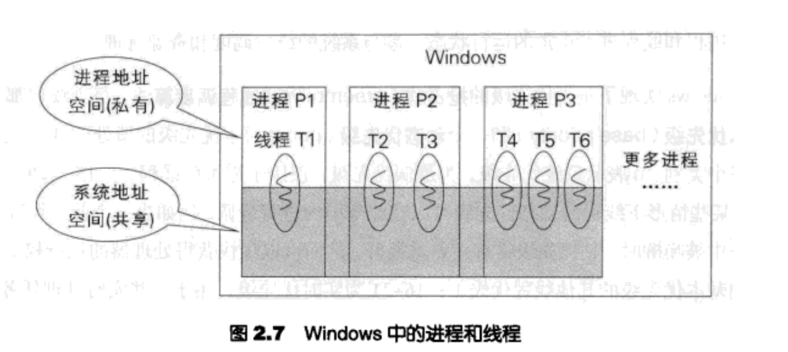
中断和异常
中断是处理器与外部设备打交道的重要途径，异常是处理器的正常指令流在执行的过程中产生的一些特殊事件需要紧急处理才能继续原来的指令流。
他们都会打断一个正常的指令流，但区别在中断是异步的而异常是同步的
中断控制器APIC允许设定每一个硬件终端的优先级但是windows并没有使用中断控制器的优先级，而是定义了一套软件中断优先级成为中断请求级别IRQL，处理器在运行时总是有一个当前的IRQL，发生中断时如果中断源的IRQL小于等于当前级别则中断屏蔽，直到遇到高的为止
IRQL越大优先级越高，当为0时表示普通线程，优先级最低可以被其他中断打断，为1时是APC，也就是异步过程调用，在一个线程中插入一个APC对象可以打断该线程的执行，当为2时是表示处理器正在做线程调度或者选择新的线程，正在处理一个硬件中断的后半部分，被称之为DPC，3-26是设备的IRQL，27-31是一些特殊硬件中断像时钟中断电源中断处理器间中断等。
延迟过程调用因为设计问题，优先级高于任何一个线程相关的函数，也屏蔽了线程调度同时低于所有硬件中断，所以不会屏蔽他们，之所以被称作延迟过程调用是因为它往往用来执行一些相对高优先级没那么重要的任务，比如更新中断时间，系统时间以及当前线程的时间信息等，并判断系统的定时器数组中是否有定时器到期，有则发出DISPATCH_LEVEL的软中断请求。
与DPC不同APC是线程相关的例程，当一个线程获取执行权时他的APC会立即被执行，这一特性非常用于实现各种异步通知时间如I/O的完成通知。
Windows内核中的公共管理设施
Windows内核中的对象管理
每一个对象都由俩部分组成，对象头和对象体
对象头就是object_header，这个在句柄表中有所体现//进程句柄表指向对象头，但全局句柄表就不一样了
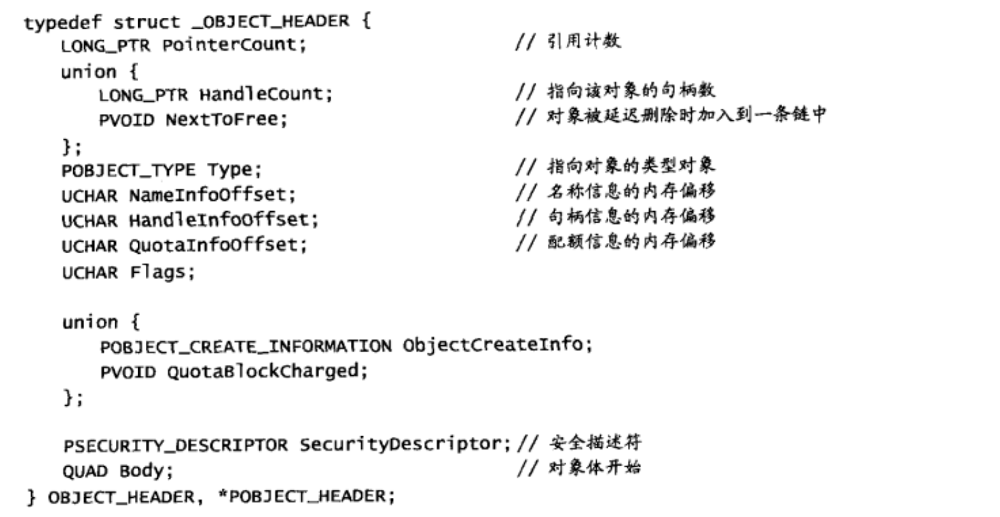
所有内核对象头都包含了对象管理所需要的基本信息包括对象名称类型引用计数安全描述符等。
同时每一种对象都需要有一个对应的类型对象
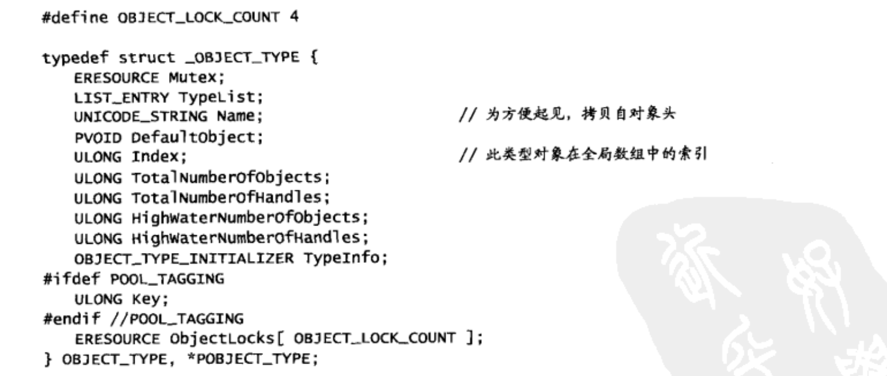
对象的生命周期管理是根据引用计数来的，当引用计数为0时会销毁对象
Windows引导过程
1.BIOS获取控制权限进行硬件的检测工作然后将控制权转移给操作系统
2.操作系统获取控制权后先从硬盘的主引导记录开始也就是MBR，MBR寻找引导代码即引导扇区然后将控制权交给引导扇区的代码，windows setup程序再安装时就会填充MBR，引导分区被windows格式化为windows所支持的文件系统，典型的如NTFS和FAT，NTFS是windowsNT的原生文件系统，FAT是MS-DOS时代继承和发展过来的
引导扇区主要是给windows提供有关该硬盘上卷的结构和格式方面的信息，并从根目录中读取windows的加载程序即ntldr，然后将控制权转交给ntldr入口函数。当然为了做到这些，单个扇区512B无法完成这些功能，为此windows让引导扇区中的代码读入其他扇区中的代码然后跳转到下一个扇区的代码区。
3.进入ntldr后就是实模式了，实模式处理器的寄存器都是16为直接访问物理内存，ntldr文件主要有俩部分组成，第一个部分是实模式代码，第二个部分是pe文件，这部分被称作os loader，先说说实模式部分，实模式主要负责完成需在16位的环境下执行的初始化工作如清除键盘缓冲区，然后为切换到保护模式做好准备，然后切换到保护模式后将控制权转交给os loader
os loader获取控制权时虽然已经是保护模式，但还运行在实模式下，虚拟地址转译机制尚未开启，os loader首先把物理内存管理起来，用内存描述符记录并构造页目录和页表，始得16MB一下可以通过页映射来访问，打开页面映射机制后os loader继续执行其他的初始化工作，接着从系统分区读入boot.ini文件并解析，根据引导选项来设置参数，最后加载我们熟悉的内核模块映像文件ntoskrnl.exe，以及HAL映像文件，加载注册表等一些工作做完后把控制权交给ntoskrnl.exe入口
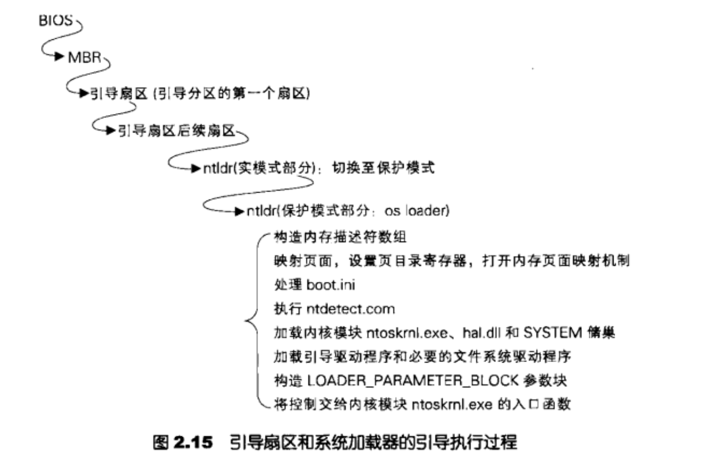
内核初始化
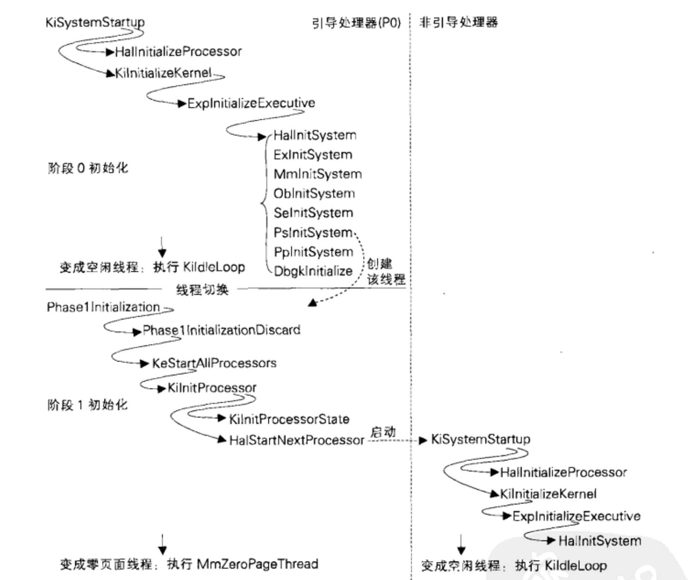
。。。有点多，书上主要介绍线程进程初始化还有多核情况处理
具体如上图
进程与线程
之前写过进程线程的相关东西，其实看起来挺快，书上讲的也不错，这边只记录一些我漏学的小知识，前面作者只是单纯的介绍下进程与线程概念，根据windows调度算法介绍线程是如何被选择的//这些前面的文章都写过，x86就是在32个就绪链表里做选择，这边提到个用户级线程的概念，应该是模拟线程切换把，根据自己的需要自己选择线程的调度算法。后面就是介绍进程与线程结构体中的每一项的成员的意义，这个在之前文章里也写过就不重复了
windows进程的句柄表
每当进程利用名称来打开或者创建一个对象的时候都会获取一个句柄，通过句柄可以找到该对象的位置，所以句柄只是个引用，句柄表也分私有和公有，公有的是全局句柄表，每个进程都有一个句柄表，俩个应用程序以共享的方式打开了同一个文件，他们获取的句柄值可能不同，但都能通过该句柄找到文件对象的位置，主要还是因为用的不是一个句柄表。
那就来康康句柄表在哪
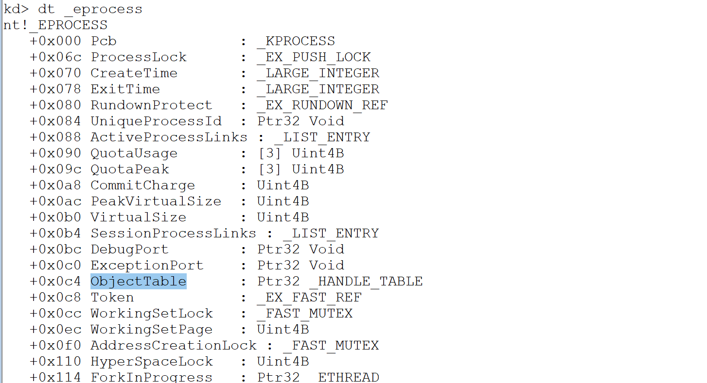
首先查看eprocess + 0xc4的地址
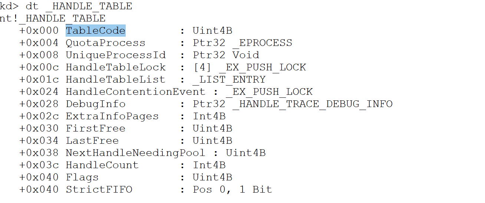
这个tablecode指向了句柄表//记得低3为清0，表示属性
假如句柄为0xa 对应值位于tablecode+0xa*2处，因为句柄表中每个成员占8字节
成员低四字节低三位清零后指向了我们的对象_OBJECT_HEADER
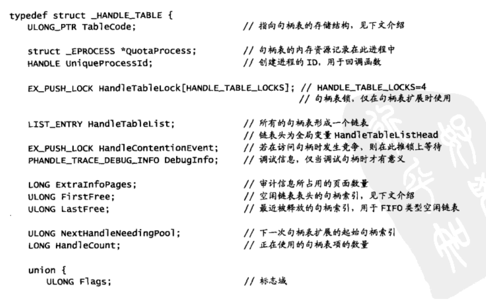
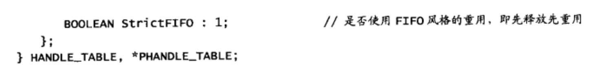
_HANDLE_TABLE结构体每项成员如上图
其中第一项为tablecode是一个指针，第二位表示句柄表层数
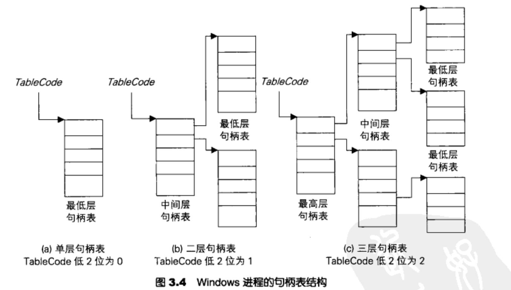
句柄表结构如上
再看看句柄表项内容
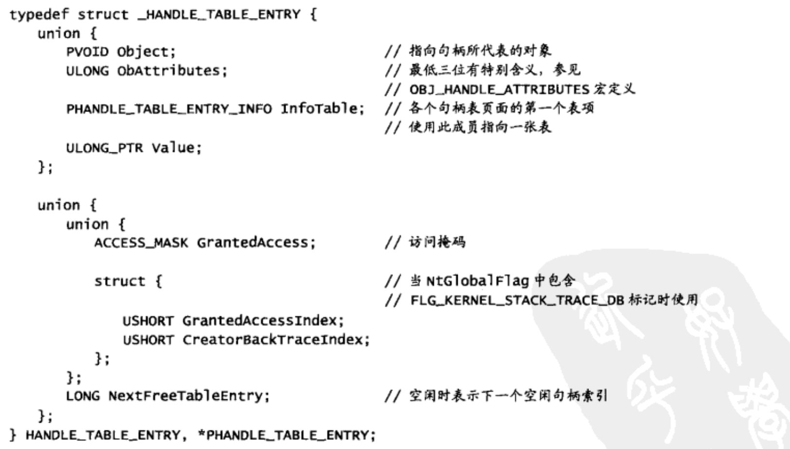